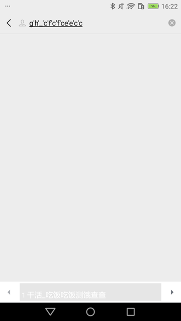
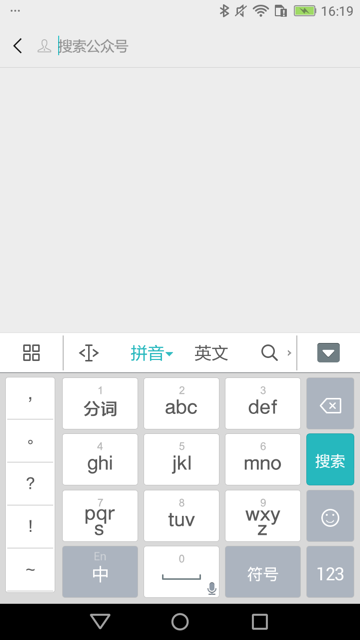
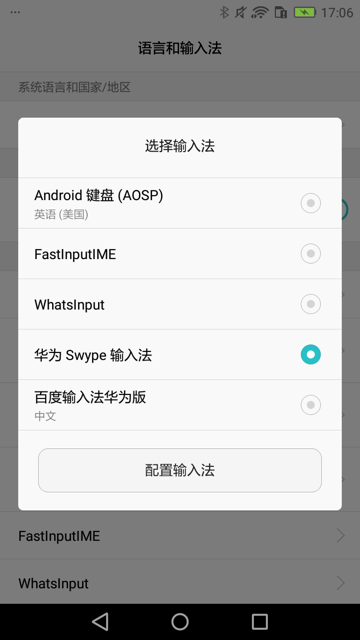
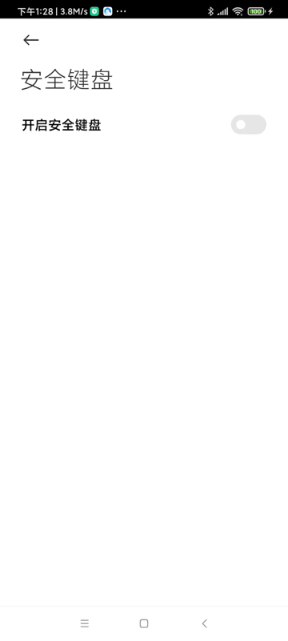

输入文字
输入文字的两种方式
对于输入文字，发现之前的可以工作的代码：
self.driver(text=locator["text"]).set_text(text,timeout=WaitFind)
会出现：无法完整输入内容
具体现象：中文输入法中，输入了字母，但是丢失了数字 的效果：

且输入法此时已经也被换了（换成了 FastInputIME 或 系统自带（华为Swype） 输入法了）
注：
self.driver(text=locator["text"]).set_text(text,timeout=WaitFind)
内部是调用的uiautomator2的session的set_text：
文件：/Users/limao/.pyenv/versions/3.8.0/lib/python3.8/site-packages/uiautomator2/session.py
def set_text(self, text, timeout=None):
self.must_wait(timeout=timeout)
if not text:
return self.jsonrpc.clearTextField(self.selector)
else:
return self.jsonrpc.setText(self.selector, text)
（除了额外支持timeout参数外）
而换用另外的：
xpath的set_text
searchElementSelector = self.driver.xpath(searchKeyText)
searchElementSelector.set_text(text)
内部调用的：
文件：/Users/limao/.pyenv/versions/3.8.0/lib/python3.8/site-packages/uiautomator2/xpath.py
def set_text(self, text: str = ""):
el = self.get()
self._parent.send_text() # switch ime
el.click() # focus input-area
self._parent.send_text(text)
send_keys
self.driver.send_keys(text)
self.driver.set_fastinput_ime(False) # 关掉FastInputIME输入法，切换回系统默认输入法（此处华为手机默认输入法是华为Swype输入法）
其中，是否加上 打开FastInputIME
self.driver.set_fastinput_ime(True) # # 切换成FastInputIME输入法
self.driver.send_keys(text)
self.driver.set_fastinput_ime(False) # 关掉FastInputIME输入法，切换回系统默认输入法（此处华为手机默认输入法是华为Swype输入法）
经测试，感觉没区别。
结果都是：
- 可以成功输入文字
- 此处的：gh_cfcfcee032cc
- 但是输入法会被切换掉
- 我之前设置的是：百度的输入法
* - 对应着，输入文字之前，应该是
- 
- 对应着，输入文字之前，应该是
- 会被换成：当前系统默认自带输入法
- 当前系统是：华为的畅享6S手机 DIG-AL00
- 自带输入法是：华为Swype输入法
- 
- 自带输入法是：华为Swype输入法
- 当前系统是：华为的畅享6S手机 DIG-AL00
- 效果是：
- 我之前设置的是：百度的输入法

结论：
- 基本上实现了自己的：要输入文字的目的
- 但是：却把之前设置的（百度）输入法切换成系统的（华为）输入法了。
- 问题不大，但是很不爽
- 但是没办法改变和保留原有输入法
- 问题不大，但是很不爽
set_text导致输入法切换，需要恢复
最终整理出函数：
def selectorSetText(u2Dev, curXpathSelector, inputText):
selectorSetTextResp = curXpathSelector.set_text(inputText)
logging.info("selectorSetTextResp=%s", selectorSetTextResp) # selectorSetTextResp=None
# 在set_text后，输入法会变成FastInputIME输入法
# 用下面代码可以实现：关掉FastInputIME输入法，切换回系统默认输入法
u2Dev.set_fastinput_ime(False)
用set_text输入字符串：小米安全键盘 影响输入，可以考虑禁止掉
代码本身：
passwordStr = "请输入密码"
passwordXpath = """//android.widget.EditText[@text="%s" and @index="2" and @clickable="true"]""" % passwordStr
passwordSelector = u2Dev.xpath(passwordXpath)
if passwordSelector.exists:
logging.info("Found %s", passwordStr)
# pwdClickResp = passwordSelector.click()
# logging.debug("pwdClickResp=%s", pwdClickResp)
# doScreenshot(u2Dev)
selectorSetText(u2Dev, passwordSelector, Vivo_Password)
def selectorSetText(u2Dev, curXpathSelector, inputText):
selectorSetTextResp = curXpathSelector.set_text(inputText)
logging.info("selectorSetTextResp=%s", selectorSetTextResp) # selectorSetTextResp=None
doScreenshot(u2Dev)
# 在set_text后，输入法会变成FastInputIME输入法
# 用下面代码可以实现：关掉FastInputIME输入法，切换回系统默认输入法
u2Dev.set_fastinput_ime(False)
是可以输入密码=字符串的
但是
- 之前开启了：小米安全键盘
- 导致：输入不顺利
- 小米安全键盘 会弹出显示 消失掉，多次之后
- （等待1，2秒后）触发异常：
/Users/limao/dev/xxx/crawler/appAutoCrawler/AppCrawler/venv/lib/python3.8/site-packages/uiautomator2/__init__.py:1646: Warning: set FastInputIME failed. use "d(focused=True).set_text instead"warnings.warn(
- 最终才能输入密码
- 导致：输入不顺利
- 解决办法：关闭 小米安全键盘
- 步骤：
- 系统设置-》更多设置-》语言与输入法-》安全键盘-》取消勾选：开启安全键盘
- 
- 系统设置-》更多设置-》语言与输入法-》安全键盘-》取消勾选：开启安全键盘
- 步骤：
以为输入框set_text输入文字无效
某次调试代码，以为是：uiautomator的UiObject或XPathSelector的set_text不生效问题
其实不是这个原因，而是点击了页面元素本身后，应该进去新的界面（输入法弹框界面，用于输入内容）
所以应该把代码：
inputUiObj = d(resourceId="com.android.browser:id/b4h", className="android.widget.TextView")
inputUiObj.set_text(BaiduHomeUrl)
换成：
inputUiObj = d(resourceId="com.android.browser:id/b4h", className="android.widget.TextView")
inputUiObj.click()
或：
inputXpathSelector = d.xpath("//android.widget.TextView[@resource-id='com.android.browser:id/b4h']”)
inputXpathSelector.click()
去触发新界面，即可。
-》后续再去定位搜索框，输入内容（百度首页地址），进入百度首页